Tutorials Wincode DMX Studio · learn by doing, with the built-in examples
Each tutorial starts from one of the examples in the top bar and takes you through a complete task, one press at a time. They build on each other, but every one starts by loading an example, so you can also jump straight to the one you need. The user manual is the reference for everything used here.
Tutorial 6 is the exception: it starts from an empty show and takes its fixtures from the fixture library.
Before you start
- Open DMX Studio in Chrome or Edge: samcho93.github.io/wincodeDmxStudio.
- To see light, you need the 3D stage. Press 🎭 3D Stage after loading an example, and put the two windows side by side. Each time you load another example, press 🎭 3D Stage again so that the stage gets the new patch.
- Loading an example replaces the current show. ↶ brings it back; Save keeps it as a file.
- Names in boxes are buttons on the screen. Text in
this typeis typed into the command line, followed by Enter.
1. Run a show — ten minutes with the showcase
Example: Wincode showcase — all five models · You will: play cue lists, mix them with effects, and use the masters — the job of an operator on show night.

- Load the example. In the top bar the list already shows Wincode showcase — all five models. Press Load, then 🎭 3D Stage.
- Start the main cue list. On the playback Main show press GO. Cue 1, Open white, fades in over 2.5 seconds: the green line under the name shows the fade, and the line below the name reads 1 · Open white.
- Step through the show. Press GO again and again: Red fan, Blue wide wash, Amber gobos (the moving heads start to circle — that cue carries an effect), Magenta prism, Green tight, half, Fade out. One more GO loops back to cue 1. Back returns one cue.
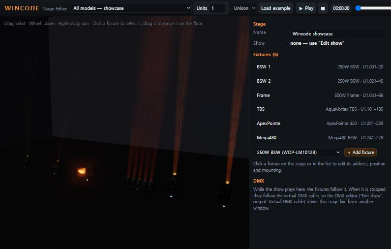
Cue 4, “Amber gobos”, on the 3D stage. - Ride the fader. Pull the Main show fader down to half: every fixture dims, but colours and positions stay. Pull it to zero and the playback releases; push it up and it starts again at cue 1.
- Add a second playback. Go to cue 2 of Main show, then press GO on Colour chase. It was started later, so it takes over colour and position (latest takes precedence), and it runs by itself: its cues use Wait triggers. Press its Off and Main show shows through again.
- Layer effects. With Main show on cue 1, press GO on Circle: the five moving heads draw circles around the position the cue gave them. Press GO on Rainbow as well: every colour-mixing fixture runs through the spectrum. Each effect has its own Off.

Main show, Circle and Rainbow running together. Green frames mark what is on. - Flash. Hold Flash on Dimmer breathe: it is on only while you hold the button.
- Group master. The ninth playback is a group master for Moving heads. Pull its fader down: only the moving heads dim, the TB5 bar stays as it is.
- Grand master and blackout. Pull GM in the top bar to 50 %: the whole rig is at half. Press Blackout (or B): everything is dark, though positions and colours keep running. Press it again and the look is back at once.
- Use the keyboard. Click an empty part of the page, then press Space for GO on playback 1, and 2, 4, 7 for GO on those playbacks.
2. Program your own cues — 250W BSW × 4
Example: 250W BSW × 4 · You will: build two looks from nothing, record them as a cue list of your own, and play it — the job of a programmer.
- Load the example. Choose 250W BSW × 4 in the top bar, press Load, then 🎭 3D Stage.
- Select and bring up the lights. Type
1 thru 4 @ full. The four tiles get an orange frame, their yellow bars fill, and the answer on the right says 4 fixtures @ 100%. The beams go straight up: pan and tilt rest at centre.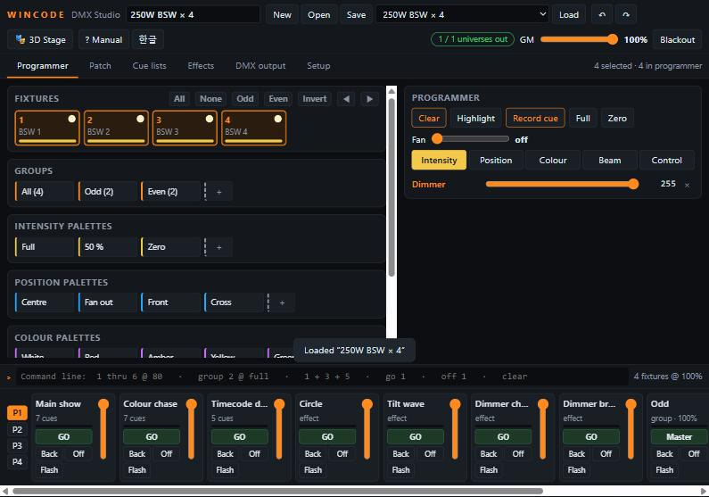
Four fixtures selected and at full. “Dimmer” in orange: the value is in the programmer. - Fan the beams. Open Position. Move the Fan slider to about ±40, then drag the Pan slider to 128: instead of all getting 128, the four fixtures get 88, 115, 141 and 168 — a fan. Put Fan back to off. Then set Tilt to about 96 to tip the beams forward.
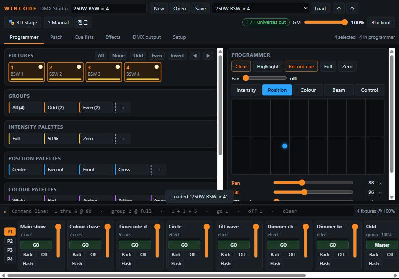
The XY pad shows the first fixture of the selection (pan 88, tilt 96). - Choose a colour. Open Colour. This fixture has a colour wheel, so there is no colour picker; open the list — functions — under Color and choose 020–029 Red.

The function list sets a value inside the “Red” range of the colour wheel. - Add a gobo. Open Beam. Under RotGobo choose 020–029 Rose. Set GoboRot to about 100 — in that range the gobo rotates. Set Zoom to about 150 to make the pattern bigger.

Rotating gobo “Rose”, rotating, zoom at 150. - Make a cue list for it. Open the tab Cue lists, press + New cue list, and type the name My show. The list is selected, so cues are recorded into it.
- Record cue 1. Go back to Programmer and press Record cue (or R). A message confirms Recorded cue 1 in “My show”. Press Clear once: the programmer is empty — and the stage goes dark, because nothing plays the cue yet.
- Build the second look from palettes. Type
1 thru 4, then click the palettes Blue (colour), Prism (beam) and Cross (position). Three clicks, a complete look. - Record cue 2 and let go. Press Record cue, then Clear twice (programmer, then selection).
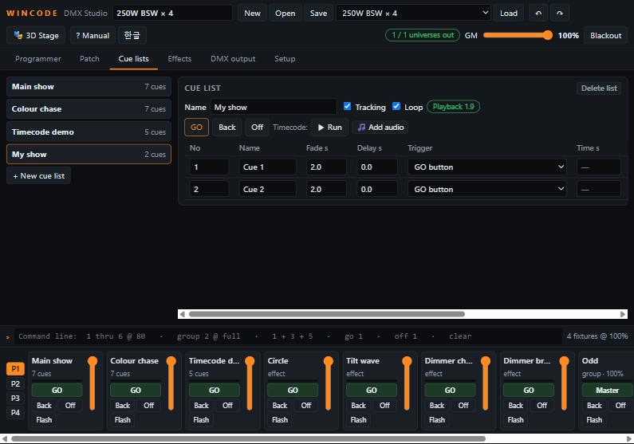
Cue lists tab: “My show” with two cues, each with a 2-second fade. The pill shows which playback it is on. - Play it. The studio put My show on the first free playback — scroll the playback bar to the right to find it. Press its GO: cue 1 fades in. Press GO again: the beams cross over and turn blue while the prism comes in.
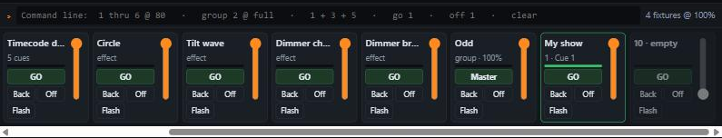
“My show” running on playback 9. 
Cue 2 on the 3D stage: blue, crossed beams. - Notice the tracking. Cue 2 holds only colour, beam and position — no dimmer. The lights stay on because cue 1's dimmer value tracks through. Untick Tracking in the Cue lists tab and go to cue 2 again: now it is dark. Tick it again.
- Change the timing. In the Cue lists tab set Fade s of cue 2 to 5 and go to it again: a slow move. Then set the Trigger of both cues to Wait with 3 seconds: with Loop on, the list now runs by itself.
- Fix a cue. Press Load on cue 1, change the colour to another function of the wheel, press Update on cue 1, then Clear.
- Save. Press Save in the top bar to keep the show as a file.
3. Effects — AquaVortex TB5 × 2
Example: AquaVortex TB5 × 2 · You will: make a rainbow and a dimmer chase across ten heads, and learn why an effect sometimes seems to do nothing.
A TB5 is one fixture with five heads. When you set an attribute, all five heads get it; an effect treats each head as an item of its own, so two bars give it ten items to spread across.
- Load the example. Choose AquaVortex TB5 × 2, press Load, then 🎭 3D Stage.
- Light the bars. Type
1 thru 2 @ full. In Beam set Zoom to about 150; in Position set Tilt to about 150 so the beams lean towards you. The bars stay dark for now: a colour-mixing fixture gives no light until it has a colour. - Make a rainbow. Open the tab Effects and press + New effect. It takes the two selected bars. Set Name to My rainbow, Type to Colour rainbow, Rate to 12 and Spread to 360.
- Run it. Press ▶ Run. The effect goes onto a free playback and starts: the spectrum travels along the ten heads.
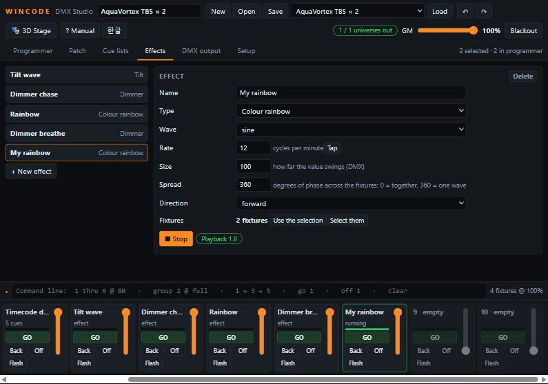
“My rainbow” running on playback 8. 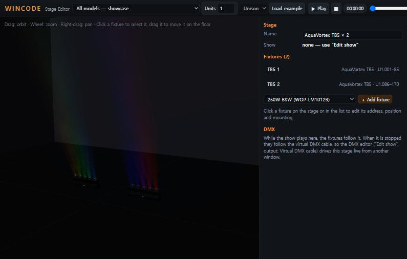
One wave of colour across the two bars. - Play with the spread. Set Spread to 0: all ten heads change colour together. Set it to 720: two full rainbows across the bars. Set Direction to backward: the colours travel the other way. Press Tap twice in time with a beat to set the rate by ear.
- Make a chase. Press + New effect again. Set Name to My chase, Type to Dimmer, Wave to chase, Rate to 40, Size and Centre to 127, Spread to 360. Press ▶ Run.
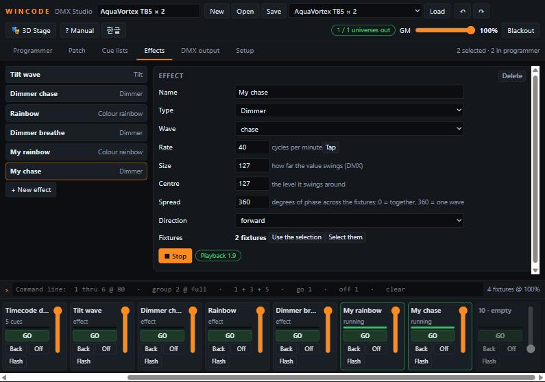
“My chase”: one head at a time. - Nothing happens — why? Both playbacks are running, yet every head stays at full. The reason is on the Programmer tab: the dimmers are still in the programmer, and the programmer always wins.
- Release the head dimmers. Open Programmer → Intensity. There are two attributes: Dimmer (the master of the bar) and LED 1 DIMMER (the heads). Press the × next to LED 1 DIMMER. Now the chase is visible: one head after another, in rainbow colours. Leave Dimmer at 255 — pressing Clear would take the master to zero and the bars would go dark.
- Shape the chase. Change Wave to sine for a soft wave, to pulse for wider steps, to random for sparkle. Halve Spread to 180: two heads are lit at a time.
- Put an effect in a cue. Open Cue lists, select Main show, and in the Effect column of cue 2 choose My chase. Stop both effect playbacks with Off, press Clear, and run Main show: the chase now starts with cue 2 and stops with cue 3.
4. A show against the clock — Timecode demo
Example: Wincode showcase — all five models · You will: run a cue list on time, re-time it, and tie it to a piece of music.
- Load the example. Choose Wincode showcase — all five models, press Load, then 🎭 3D Stage.
- Look at the list. Open Cue lists and click Timecode demo. Its five cues have a Time s: 0, 4, 8, 12 and 16 seconds. Loop is off, so it runs once.
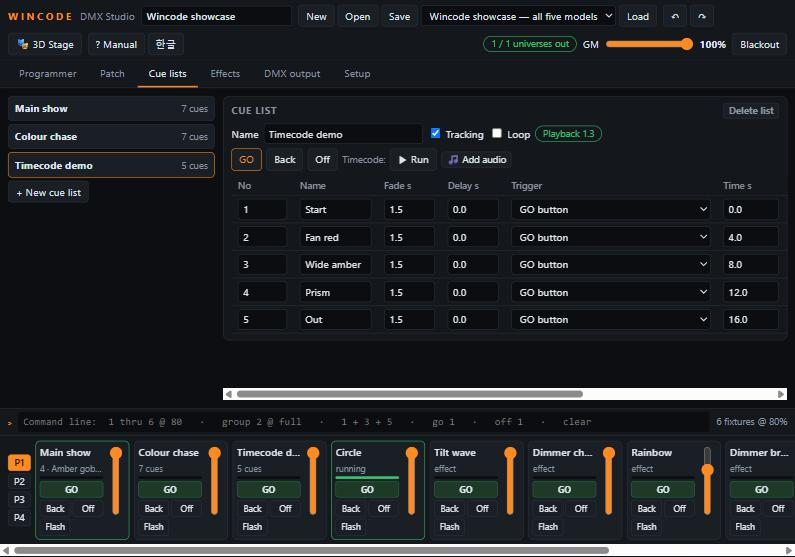
A cue with a time fires by itself when a timecode run reaches it. - Run it. Press ▶ Run next to Timecode. Hands off: Start comes in at once, Fan red at 4 seconds, Wide amber at 8, Prism at 12, Out at 16. The playback shows the running time.

5.6 seconds in: cue 2 is live (green row), and the playback shows “▶ 5.6 s”. - Stop and re-time. Press ■ Stop. Change the times to 0, 2, 4, 6 and 8, and the Fade s of every cue to 0.5: the same show, twice as fast and snappier. Run it again.
- Add a cue in between. In the Programmer type
4 @ full(the TB5), click the colour palette Cyan, and press Record cue — Timecode demo is the current list, so the cue lands there. Back in Cue lists, give it No 2.5 and Time s 3: it sorts itself between cues 2 and 3. Press Clear. - Add music. Press 🎵 Add audio and choose a sound file. Run again: the music plays, and it is now the clock — the cues follow the position of the music, not a separate timer.
- Find your times by ear. Play the track once and note the seconds of the moments you want to hit, then type them into Time s. Decimals work: 12.4 is fine.
5. A large rig — 48 fixtures, 5 universes
Example: Large rig — 48 fixtures, 5 universes · You will: work with many fixtures at once and send universes to Art-Net and sACN.
- Load the example. Choose Large rig — 48 fixtures, 5 universes and press Load. (This rig is too big to be worth viewing in 3D; this tutorial uses the DMX output monitor instead.)
- Read the patch. Open Patch. The header says 48 fixtures · 2088 channels of 2560 (5 universes, up to 64). Scroll down: 16 Mega480, 16 ApexPointe 420, 8 TB5, 8 BSW. A Mega480 takes 39 channels, so 13 fit a universe and the 14th starts universe 2 at address 1.

The patch. Fixture numbers run 1–48, whatever the universe. - Select by group. Back in Programmer, type
group 2 @ full. Group 2 is Moving heads: 40 fixtures on four universes come up with one line.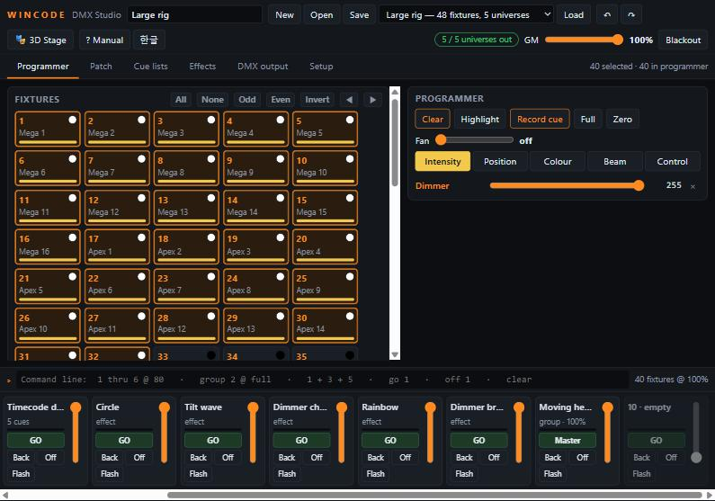
Forty fixtures selected and at full. One Dimmer slider drives them all. - Work in halves. Press Odd, click the palette Red; press Even, click Blue. Press All, set Fan to ±60 and move Pan: 48 fixtures spread in one move. Put Fan back to off.
- Check the wire. Open DMX output and step through the universes with the list at the top right. Hover a cell to see which fixture and function it is.
- Give the universes their lines. Open Setup. For universes 1 and 2 choose Art-Net (bridge), with Universe 0 and 1 and the IP address of your node as Host. For universe 3 choose sACN / E1.31 (bridge), Universe 3, Host
multicast. Leave 4 and 5 on the Virtual DMX cable.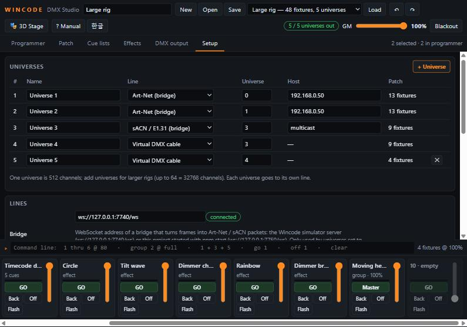
Five universes on three kinds of line. The pill next to Bridge says “connected”. - Connect the bridge. A browser cannot send Art-Net or sACN itself. Start a bridge — the simulator's server, or
npm startin the DMX Studio folder — and enter its address under Lines → Bridge (ws://127.0.0.1:7740/wsorws://127.0.0.1:7750/ws). The output pill in the top bar turns green: 5 / 5 universes out. - Grow the rig. In Patch press + Patch fixtures, choose a fixture and a quantity of 20, and leave the start address at 0. The studio fills the free space and opens universe 6 when it needs it. New universes start with the line Off: set it in Setup.
- Run the examples' show on it. The playbacks at the bottom work exactly as in tutorial 1 — Main show, Colour chase, the effects — now on 48 fixtures.
6. A rig from the library — Cameo spots and Robe washes
Example: none — you start from an empty show · You will: patch fixtures of other manufacturers from the fixture library, see them on the 3D stage, and program them with the same tools as the Wincode fixtures.
- Start empty. Press New in the top bar.
- Patch four spots. Open Patch and press + Patch fixtures. In the search field under Fixture library type auro spot 300 and click the row Auro Spot 300. The Fixture field at the top now reads cameo — Auro Spot 300 and Mode offers its three modes; leave 24-channel (24). Set Quantity to 4 and press Patch. A message confirms Patched 4 × Auro Spot 300.
- Patch six washes. Press + Patch fixtures again, search ledwash, click Robin LEDWash 600, leave the mode 1st (37), set Quantity to 6 and press Patch. The header reads 10 fixtures · 318 channels of 512: the studio addressed them one after another.
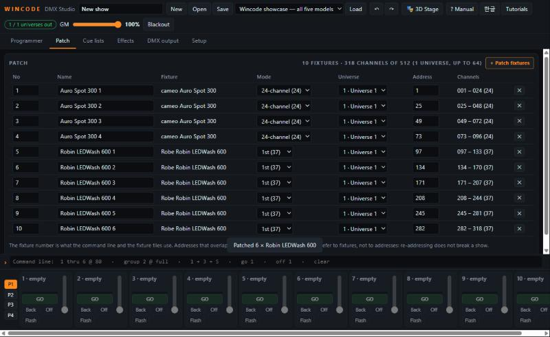
Four Cameo spots and six Robe washes, numbered 1–10 and addressed automatically. - Open the stage. Press 🎭 3D Stage. Ten fixtures stand on the stage in two rows. They all have the same stand-in body — the library knows a fixture's channels, not its shape.
- Bring up the washes and give them a colour. Type
5 thru 10 @ full. Open Colour: this fixture mixes colour, so there is a colour bar and a row of swatches. Click the dark blue swatch. Blue Inner goes to 255 — and so do the middle and outer rings: this wash has three colour zones, and a colour you pick goes to all of them.
The Colour group of the Robin LEDWash 600: picker, swatches, and its own colour channels. - Tip them forward. Open Position and set Tilt to about 96.
- Keep the selection and the colour. Press + in Groups: Group 1 (6) appears — the six washes, one click from now on. Press + in Colour palettes: Colour 1 holds the blue.
- Now the spots. Type
1 thru 4 @ full. Open Colour: a spot has a colour wheel, so there is no picker. Open the list — functions — under Color Wheel and choose 011–015 Red. - Add a rotating gobo. Open Beam. Under Gobo Wheel 1 choose 046–065 Gobo 3; under Gobo 1 Rotation choose 129–191 Gobo rotation CW slow … fast. The lists come from the library: every range of every channel with its name. In Position set Tilt to about 104.
- Record cue 1. Press Record cue. There is no cue list yet, so the studio makes one: Recorded cue 1 in “Main”, and Main appears on playback 1. Press Clear once.
- Build a second look. Click Group 1, open Colour and click the orange swatch. Type
1 thru 4, and in Colour choose 081–088 Blue; in Beam, under Prism, choose 129–191 Prism CW slow … fast. Press Record cue, then Clear twice.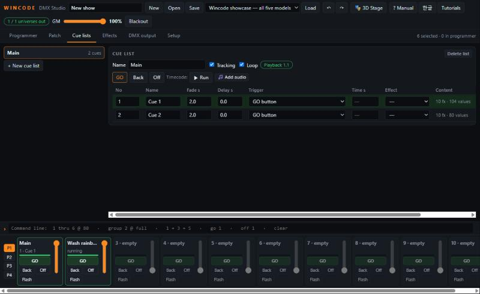
Cue lists tab: “Main” with two cues, on playback 1.1. - Play it. Press GO on Main: blue washes, red spots with a turning gobo, fading in over two seconds. GO again: the washes turn orange, the spots blue with a rotating prism. A third GO loops back to cue 1.
- Put an effect on top. With cue 1 running, type
5 thru 10, open Effects and press + New effect. Name it Wash rainbow, set Type to Colour rainbow and press ▶ Run. It goes to playback 2 and the six washes run through the spectrum, each a step ahead of its neighbour.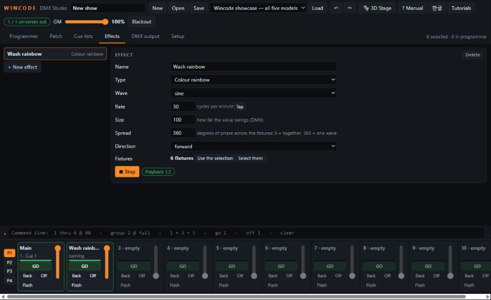
The effect, running on playback 1.2 next to the cue list. 
The 3D stage: six washes in a rainbow, four red spots. The pill reads Following the virtual DMX cable. - Take the effect away. Press Off on Wash rainbow: the washes return to the colour of the cue.
- A fixture that is not in the library. In + Patch fixtures press Import GDTF / OFL file… and choose a
.gdtffile from the manufacturer or from gdtf-share.com. It appears at the top of the library list, marked imported, already chosen — patch it like the others. - Save. Press Save. The show file contains the library fixtures you used, so it opens on any computer.
Keep in mind: library data is not checked against the fixtures' manuals — compare the channel list with the manual before a real show.
Where to go next
- Start from New and patch your own rig; record groups first, then palettes, then cues — in that order the work goes fastest.
- Connect a MIDI surface (Setup → MIDI) and run tutorial 1 from real faders.
- Keep the key list and the command line table at hand.
- If something does not behave as you expect, see Troubleshooting — most surprises come from a value still held in the programmer, or from tracking.
Wincode DMX Studio · github.com/samcho93/wincodeDmxStudio